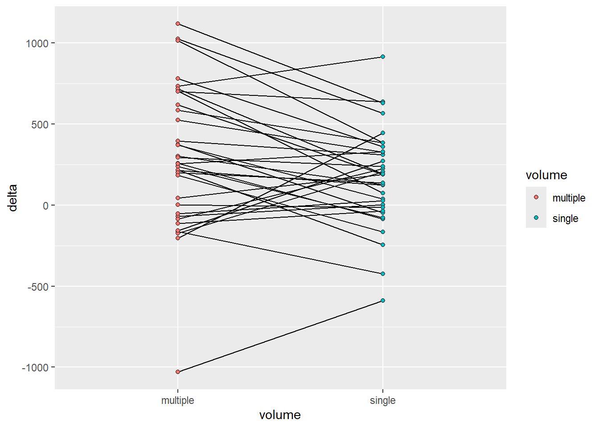
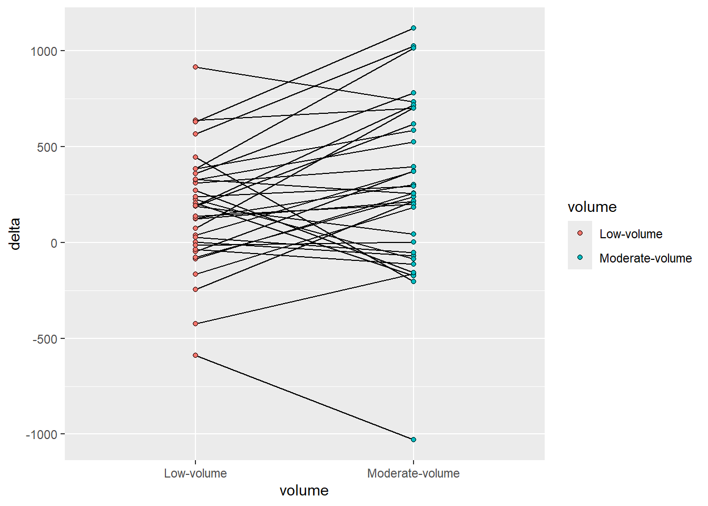
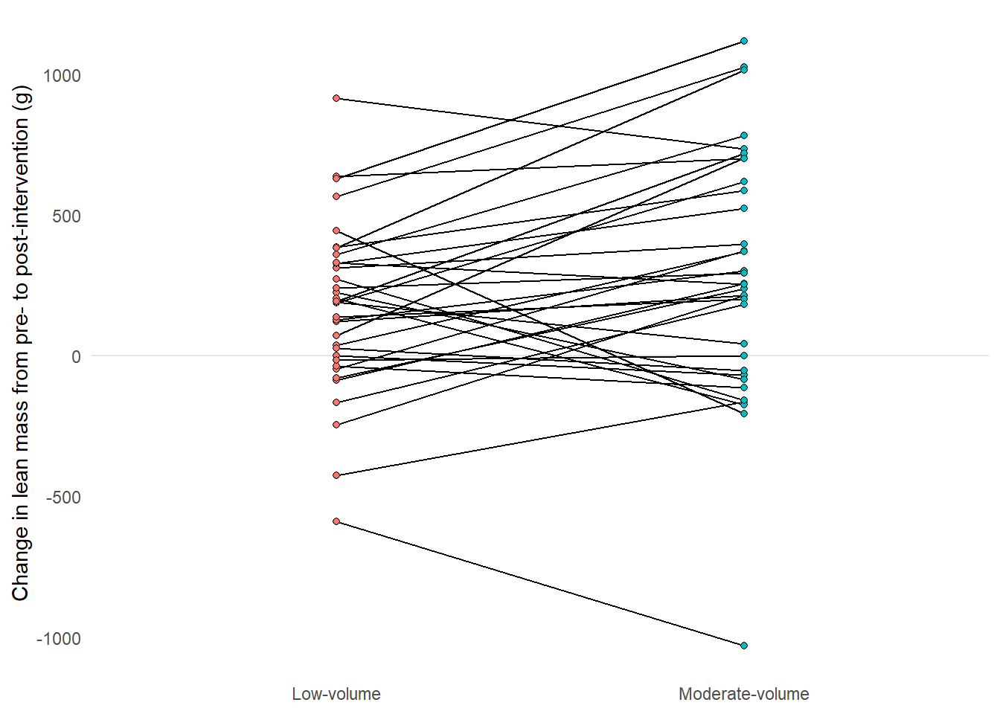
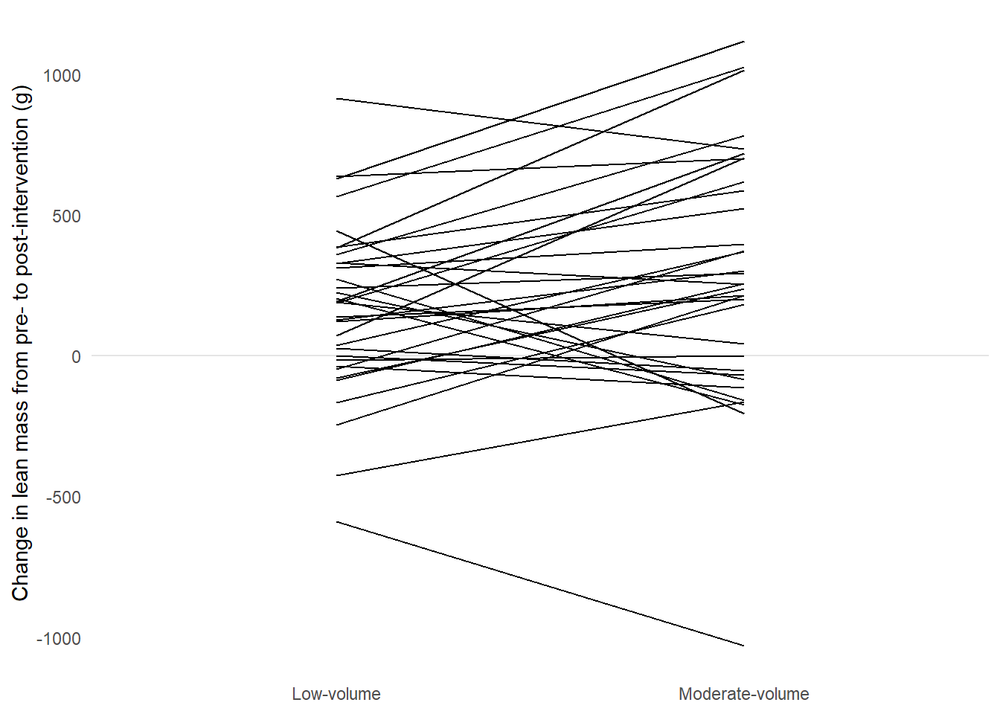
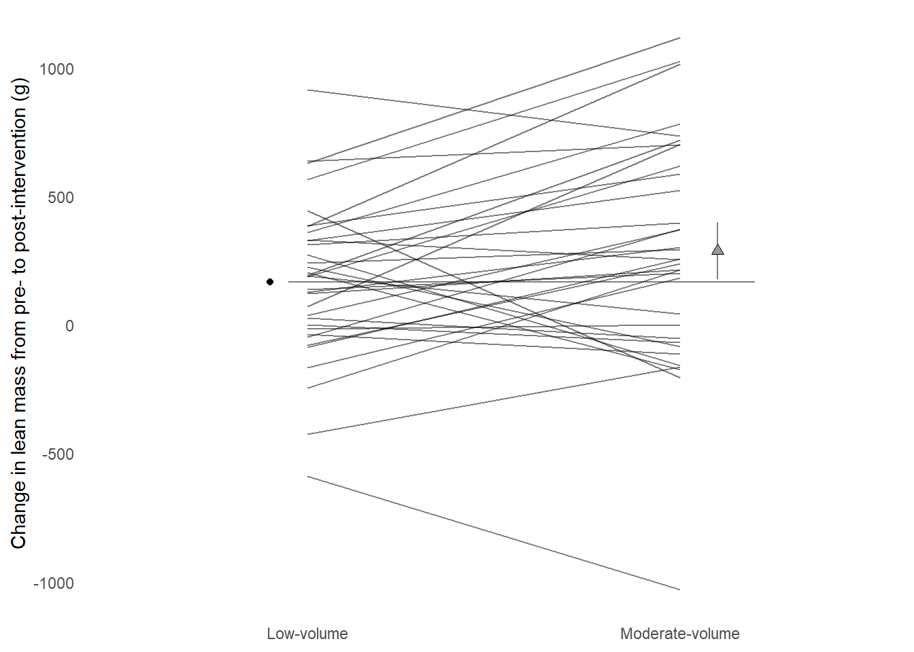
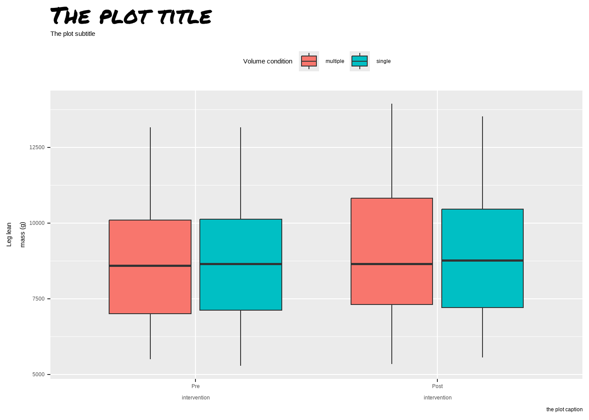

An important rule of scientific graphics is, not to lie. Or as stated by Tufte (2001), “graphical excellence begins with telling the truth about the data”. Clear and honest representation of the data together with detailed labeling are key factors for avoiding lies (Tufte 2001).
Another key aspect in the construction of scientific graphs is to decide what to plot. Graphs are very good at showing differences, however, what differences should be show? In a two-group design (treatment vs. control) we should aim at showing the difference between groups, not the difference within groups (Ho et al. 2019). When data are grouped, or measurements repeated within experimental units (such as research participants), we should show aim at indicating this fact. When graphical summaries are shown, we should also aim at showing the underlying data (Tufte 2001).
4.0.1 Revise and edit
When trying to find a coherent guide for scientific graphics one quickly realize that guidelines are often in conflict with each other. We have to reach some pragmatic level of compromise in our work. How do we find this compromise? Tufte’s advice to constantly revise and edit is a good start (Tufte 2001). Like with writing we try to explain or show, but fail to do so. Multiple edits later our text is ready to communicate an idea to others, and we might have learned something too.
In practice a graph, or a collection of graphs are born from multiple revisions. Below we will revise our graph using a number of principles outlined by Tufte (Tufte 2001).
4.0.1.1 Show the data
Our original idea is shown below. We made a box-plot of raw lean mass values. A core shortcoming of this graph is that it hides uncertainty our sample size. We could add another layer on top of our bow-plots to show raw data. The geom geom_point is added with the additional arguments: shape = 21, position =position_jitterdodge(dodge.width = 0.75, jitter.width = 0.1). The change in shape creates the possibility to fill points. As we have specified fill in aesthetics each point will have a condition-wise fill.
Figure 4.1: A boxplot with raw data plotted on top
Are we showing the data now? Some aspects of the data are still lost. The fact that the experiment is a nested one is not obvious from this display. Could we connect related data points?
In the next graph we’ll try another alternative, using a line-graph we might be able to convey an aspect of the repeated measures design. We will also add a facet to show each volume condition.
Figure 4.2: A line graph grouping observations per participant and volume condition
But what is the real comparison here? Here we might actually display within-condition differences. The analog to statistical test might be that we show two within-condition t-tests and tell the reader that the effect in one group is greater than the other. This is not an honest test.
To revise further we might want to compare changes across conditions. We can do this and still highlight comparisons within participants since each participant performed both conditions. To accomplish this we need some data wrangling.
delta_lean <- leg_leanmass |>1filter(include !="excl") |>2pivot_wider(names_from = time, values_from = lean_mass) |>3mutate(delta = post - pre) |>print()
1
Using only included participants from our raw data set we first…
2
create a wide data set by time allowing for…
3
a simple difference across time in each participant and condition.
# A tibble: 68 × 7
participant include leg volume pre post delta
<chr> <chr> <chr> <chr> <dbl> <dbl> <dbl>
1 FP28 incl L multiple 7059 7273 214
2 FP28 incl R single 7104 7227 123
3 FP40 incl L single 7190 7192 2
4 FP40 incl R multiple 7506 7437 -69
5 FP21 incl L single 10281 10470 189
6 FP21 incl R multiple 10200 10819 619
7 FP34 incl L single 6014 6326 312
8 FP34 incl R multiple 6009 6405 396
9 FP23 incl L single 8242 8687 445
10 FP23 incl R multiple 8685 8480 -205
# ℹ 58 more rows
We have saved the data set in a new object called delta_lean we will use this for plotting.
Code producing the figure
delta_lean |>ggplot(aes(volume, delta, fill = volume, group = participant)) +geom_line() +geom_point(shape =21)

Figure 4.3: A line graph grouped by participant comparing conditions
It could be argued that the order of the factor variable volume is not accurately representing the data. Multiple is larger than single and the graph might be more accurate in this respect if we change this variable. I will do it as a pre-plotting operation. We may then also change the labels.
Code producing the figure
delta_lean |>mutate(volume =factor(volume, levels =c("single", "multiple"), labels =c("Low-volume", "Moderate-volume"))) |>ggplot(aes(volume, delta, fill = volume, group = participant)) +geom_line() +geom_point(shape =21)

Figure 4.4: A line graph grouped by participant comparing conditions
4.0.1.2 Maximize the data-ink ratio
A guiding principle in Tufte’ guideline is to remove non-data ink. We should aim to maximize the amount of ink used to display the data. Non-data ink can be removed by manipulating theme components. A great start might be to use a built in theme, theme_minimal.
Figure 4.5: A line graph grouped by participant comparing conditions, reducing non-data ink with theme_minimal.
The legend is redundant, it can be removed since this information is already present in the x axis. The x-axis title is redundant as the information is duplicated in the labels. Some grid lines can be removed without loss of information, maybe even all of them. Let’s add a line manually to show the 0 change. We can access these options using the theme function and elements manipulated therein. Placing the theme after theme_minimal in our call makes sure that we don’t bring back elements from the pre-built theme. Let’s also add a more descriptive label on the y-axis.
Code producing the figure
delta_lean |>mutate(volume =factor(volume, levels =c("single", "multiple"), labels =c("Low-volume", "Moderate-volume"))) |>ggplot(aes(volume, delta, fill = volume, group = participant)) +geom_hline(yintercept =0, color ="gray90") +geom_line() +geom_point(shape =21) +labs(y ="Change in lean mass from pre- to post-intervention (g)") +theme_minimal() +theme(legend.position ="none", axis.title.x =element_blank(), panel.grid.major.x =element_blank(), panel.grid.minor.y =element_blank(), panel.grid.major.y =element_blank())

Figure 4.6: A line graph grouped by participant comparing conditions, reducing non-data ink with theme_minimal.
4.0.1.3 Erase redundant data ink
We have used points to represent the start and end of each line. This might be a case of redundant data ink.
Code producing the figure
delta_lean |>mutate(volume =factor(volume, levels =c("single", "multiple"), labels =c("Low-volume", "Moderate-volume"))) |>ggplot(aes(volume, delta, fill = volume, group = participant)) +geom_hline(yintercept =0, color ="gray90") +geom_line() +labs(y ="Change in lean mass from pre- to post-intervention (g)") +theme_minimal() +theme(legend.position ="none", axis.title.x =element_blank(), panel.grid.major.x =element_blank(), panel.grid.minor.y =element_blank(), panel.grid.major.y =element_blank())

A line graph grouped by participant comparing conditions, reducing non-data ink with theme_minimal and removing redundant data ink by removing points.
To make the graph even more light weight we could consider making lines a bit transparent. Using alpha = 0.5 we can add transparency to lines.
Code producing the figure
delta_lean |>mutate(volume =factor(volume, levels =c("single", "multiple"), labels =c("Low-volume", "Moderate-volume"))) |>ggplot(aes(volume, delta, fill = volume, group = participant)) +geom_hline(yintercept =0, color ="gray90") +geom_line(alpha =0.5) +labs(y ="Change in lean mass from pre- to post-intervention (g)") +theme_minimal() +theme(legend.position ="none", axis.title.x =element_blank(), panel.grid.major.x =element_blank(), panel.grid.minor.y =element_blank(), panel.grid.major.y =element_blank())
A line graph grouped by participant comparing conditions, reducing non-data ink with theme_minimal and removing redundant data ink by removing points and adding transparency.
4.0.1.4 Making comparisons
We now have a graph that represents the data, could we aid interpreting the figure? Perhaps we could add some information showing average changes per condition? Below we will construct a data frame of averages for each condition and add it to the figure.
Code producing the figure
descriptives <- delta_lean |>mutate(volume =factor(volume, levels =c("single", "multiple"), labels =c("Low-volume", "Moderate-volume"))) |>summarise(.by = volume, m =mean(delta))delta_lean |>mutate(volume =factor(volume, levels =c("single", "multiple"), labels =c("Low-volume", "Moderate-volume"))) |>ggplot(aes(volume, delta, fill = volume, group = participant)) +geom_hline(yintercept =0, color ="gray90") +1geom_point(data =filter(descriptives, volume=="Low-volume"),aes(volume, m, group =NULL, fill =NULL), position =position_nudge(x =-0.1)) +2geom_point(data =filter(descriptives, volume=="Moderate-volume"),aes(volume, m, group =NULL, fill =NULL), position =position_nudge(x =0.1)) +geom_line(alpha =0.5) +labs(y ="Change in lean mass from pre- to post-intervention (g)") +theme_minimal() +theme(legend.position ="none", axis.title.x =element_blank(), panel.grid.major.x =element_blank(), panel.grid.minor.y =element_blank(), panel.grid.major.y =element_blank())
1
Two point layers are added to make it easy to plot points besides lines. Notice that the x-axis factor must be correctly formatted
2
The other point layer, here position_nudge is positive.
A line graph grouped by participant comparing conditions, reducing non-data ink with theme_minimal and removing redundant data ink by removing points and adding transparency. Adding group averages with geom_point.
Again, we might not be giving the reader of the graph the full story. Recently a new type of graph has been suggested to aid interpretation of two-group comparisons. In addition to means we could add the estimate of the difference between groups. These plots are called estimation plots (Ho et al. 2019). In our previous work we used different variations of ANCOVA models to adjust for baseline values (Hammarström et al. 2020) while modelling the change score. Let’s start by fitting the model. Since the design is a bit tricky we need to let the model know that observations are grouped by participant. We can use the same delta_lean data set to fit the model.
The output from the model is saved in a new object, including confidence intervals for each coefficient.
Our model gives us one coefficient of interest, volumesingle. This is the difference between multiple and single sets change in lean mass. This coefficient has an accompanying confidence interval that can be used for inference. Let’s add the difference between groups as an additional point to the plot together with a confidence interval and a second scale.
Code producing the figure
descriptives <- delta_lean |>mutate(volume =factor(volume, levels =c("single", "multiple"), labels =c("Low-volume", "Moderate-volume"))) |>summarise(.by = volume, m =mean(delta))1zero <- descriptives |>filter(volume =="Low-volume") |>pull(m)2est <- zero + (- mod_results[3,1])ciu <-- mod_results[3,4] + zerocil <-- mod_results[3,5] + zerodelta_lean |>mutate(volume =factor(volume, levels =c("single", "multiple"), labels =c("Low-volume", "Moderate-volume"))) |>ggplot(aes(volume, delta, group = participant)) +geom_point(data =filter(descriptives, volume=="Low-volume"),aes(volume, m, group =NULL, fill =NULL), position =position_nudge(x =-0.1)) +3geom_segment(y = zero, yend = zero, x =0.95, xend =2.2, color ="gray50", lty =1) +4geom_errorbar(aes(y = est, ymin = cil, ymax = ciu, x =2.1), width =0, color ="gray50") +geom_point(data =filter(descriptives, volume=="Moderate-volume"),aes(volume, m, group =NULL, fill =NULL), position =position_nudge(x =0.1), shape =24, size =2, fill ="gray60") +geom_line(alpha =0.5) +labs(y ="Change in lean mass from pre- to post-intervention (g)") +theme_minimal() +theme(legend.position ="none", axis.title.x =element_blank(), panel.grid.major.x =element_blank(), panel.grid.minor.y =element_blank(), panel.grid.major.y =element_blank())
1
A “zero line” is created from the descriptive data in the low-volume group
2
The confidence interval is “corrected” to the observed data as the model CI only shows the differences between groups. Notice that estimates are reversed in the model.
3
A segment is added to represent the “zero line”, the mean in low-volume.
4
An errorbar is used around the descriptive data for the moderate volume group.

A line graph grouped by participant comparing conditions, reducing non-data ink with theme_minimal and removing redundant data ink by removing points and adding transparency. Adding group averages with geom_point.
The resulting graph shows the change from pre- to post-intervention in each condition per participant by lines. The average at the reference category represents a baseline to which the moderate volume condition is compared. Inference can be made from a 95% confidence interval around the moderate-volume condition.
4.1 Edit and revise in practice
The process of creating graphs is an iterative practice. We try something, edit and revise. When the end result goes into a publication it is a good idea to have a workflow that updates the end result not some intermediate result.
Let us say that we are planning to submit a paper to the American Journal of Physiology. In the author instruction we read that a single column figure should be less or equal to 8.9 cm in width and a maximum 22.8 in height/depth.1 This gives some basics instructions for our plot.
Graphs could be created from separate R scripts. This makes the workflow smoother as we only need to run a single script to recreate the output after revision. I keep my figures together with the scripts in a dedicated folder in my project folder called figures. Here I number figures and their corresponding scripts as figure1.R, figure1.pdf, figure2.R etc.
On the bottom of the script I have a call to the function ggsave. This function makes it easy to save a ggplot in a number of formats, also formats accepted by journals (such as TIF and PDF).
When I make changes to the script and saves them they are automatically sourced and the output is recreated.
4.2 Additional notes, tips and topics
4.2.1 Labels, annotations and special texts
A package called ggtext makes it possible to write markdown syntax in labels and annotation in ggplots. This improves usability to a large degree as subscripts and superscrits together with special characters are easily added to labels etc.
Sometimes custom fonts are needed. Your basic collection of fonts are not that impressive but packages such as showtext may help in installing additional fonts.
Specifying a font family, use your own specified name to access it.

Adding a silly font to a basic graph
Hammarström, Daniel, Sjur Øfsteng, Lise Koll, Marita Hanestadhaugen, Ivana Hollan, William Apró, Jon Elling Whist, Eva Blomstrand, Bent R. Rønnestad, and Stian Ellefsen. 2020. “Benefits of higher resistance-training volume are related to ribosome biogenesis.”The Journal of physiology 598 (3): 543–65. https://doi.org/10.1113/JP278455.
Ho, Joses, Tayfun Tumkaya, Sameer Aryal, Hyungwon Choi, and Adam Claridge-Chang. 2019. “Moving Beyond P Values: Data Analysis with Estimation Graphics.”Nature Methods 16 (7): 565–66. https://doi.org/10.1038/s41592-019-0470-3.
Tufte, Edward R. 2001. The Visual Display of Quantitative Information. 2. edition. Cheshire, Conn.: Graphics Press.
See https://journals.physiology.org/manuscript-prep#figures↩︎